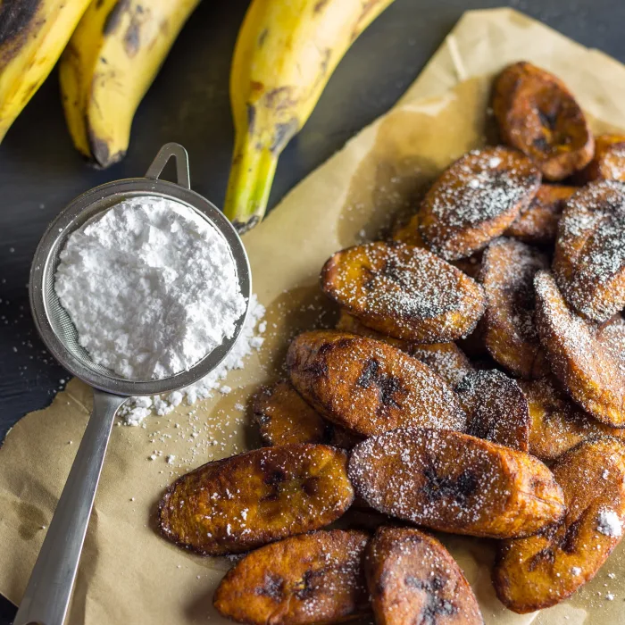

Maduros (Fried Sweet Plantains<)/h1>

The best plantains for this maduros recipe are the ones that have very black skins and tender flesh. The darker they are, the sweeter and less starchy they become, and that is exactly what you want to get that deep caramelization and custardy interior.
Ingredients
- 2 to 3 ripe plantains
- 4 tablespoons canola oil
- Salt
Steps
- Peel the plantains by cutting off the ends and discarding. Slice down the middle and remove peel. Slice plantains on an angle into thick wedges.
- Heat oil in a large frying pan and place over medium heat. Add sliced plantains and cook on both sides until golden brown. Remove from heat, sprinkle with salt and serve hot. Can serve dusted with powdered sugar.